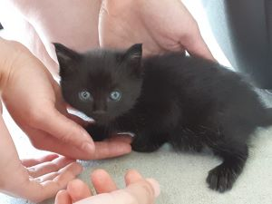
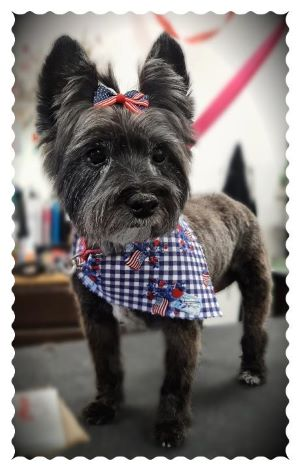

A Quick Introduction
Allow me to introduce you to my cat and my (late) dog.
Ninja
This is Ninja, my cat; this picture is from the first day we got her.
My co-worker found her when she was nearly four weeks old; the kitten was crying near her porch, and mama cat was nowhere to be found. She could not keep the kitten (she has 2 large dogs), so she asked if anyone at the library could take her in (or at least "kitten sit" for a few days to keep her safe while trying to find a home for her). I told her we would try it out and see how well our dog received her. The dog was slightly unsure at first, but quickly grew used to her, so we were able to keep her.
She is very affectionate and playful and is a wonderful addition to our family!
Sophie
This is Sophie, my late Cairn/Yorkshire terrier mix dog.
We got Sophie about 12 and a half years ago when she was almost 5 years old from a friend of the family. She was an adorable, playful, and affectionate dog who loved to hunt ground squirrels in her earlier years.
Late last year, she got very sick and passed away shortly after her 17th birthday.
She was a precious member of our family, and we are very grateful for the time we had with her.